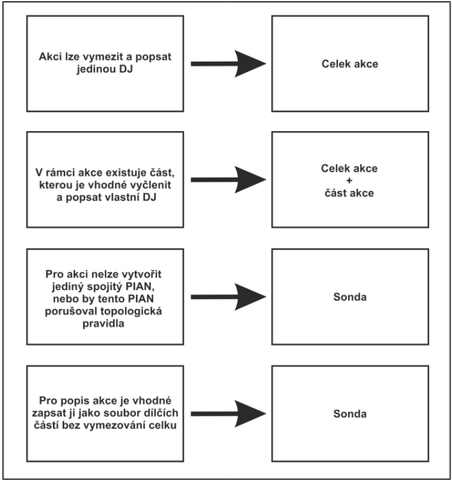

Zápis dok. jednotek
Při popisu archeologických akcí v AMČR nastávají situace, kdy je třeba vytvořit více než jednu dokumentační jednotku (DJ). V takových případech je třeba zvolit správný typ těchto DJ. Na výběr máme ze dvou možností. První z nich je situace, kdy první vytvořená DJ reprezentuje Celek akce a všechny další DJ jsou pak Částmi akce. Druhou je situace, kdy jsou všechny DJ u akce typu Sonda. Volba konkrétního typu, nebo typů DJ závisí na charakteru akce a způsobu jejího formálního a prostorového popisu.
Dokumentační jednotku Celek akce volíme když:
- Celou akci lze jednotně popsat a vymezit ji právě jedním PIAN (bod, linie, polygon).
Dokumentační jednotku Celek akce a Část akce volíme když:
V rámci akce existuje jedna či více částí, které mají jiný popis (evidované komponenty) než celek akce a je vhodné vyčlenit pro ně vlastní PIAN.
Např. prostorově omezená pozitivní komponenta v rámci negativního rozsáhlého celku (typické pro rozsáhlejší liniové akce často spojené s inženýrskými sítěmi, ale i pro rozsáhlejší plošné akce).
Dokumentační jednotku Sonda volíme když:
Akci nelze vymezit jediným spojitým PIAN.
Např. jednotlivé sondy výzkumu, nenavazující ulice u liniových akcí, nesouvislé plochy povrchových sběrů atp.
Pro vymezení jediným PIAN by tento porušoval topologická pravidla.
Např. liniové stavby v intravilánech, kdy by pro vyznačení celého rozsahu akce bylo třeba, aby se PIAN opakovaně vracel po stejné trase nebo protínal sám sebe.
Pro popis akce je vhodné zapsat ji jako soubor dílčích DJ bez vymezování celku akce.
Např. sektory pravidelné sítě povrchových sběrů popisované samostatně.

Příklady dobré praxe
Při popisu archeologických akcí v AMČR nastávají situace, kdy je třeba vytvořit více než jednu dokumentační jednotku (DJ). V takových případech je třeba zvolit správný typ těchto DJ. Na výběr máme ze dvou možností. První z nich je situace, kdy první vytvořená DJ reprezentuje Celek akce a všechny další DJ jsou pak Částmi akce. Druhou je situace, kdy jsou všechny DJ u akce typu Sonda. Volba konkrétního typu nebo typů DJ závisí na charakteru akce a způsobu jejího formálního a prostorového popisu.
Dlouhé liniové akce
Jedním z typických příkladů použití DJ typu Celek akce a Část akce jsou dlouhé liniové akce (např. inženýrské sítě), kdy v rámci této dlouhé linie, která je často ve většině svého rozsahu negativní, existuje jedno či více míst, na kterých byla pozitivní archeologická zjištění. V těchto případech je trasa výkopu zanesena do AMČR jako celek akce (dokumentační jednotka D01), který je negativní a polohy s pozitivním archeologickým zjištěním jsou pak vyznačeny jako část akce v rámci nadřazeného celku (D02 a D03). Může se jednat o bodové či liniové vymezení, které reflektuje situaci v terénu. K této části akce jsou pak navázány příslušné komponenty s jejich popisem. Zobrazení v mapovém okně a zápis v AMČR jsou patrné z ?@fig-dj-linie a ?@fig-dj-linie-z.
Sondy rozsáhlých liniových akcí
Jedním z typických příkladů použití dokumentačních jednotek typu Sonda jsou rozsáhlé linové akce (často se jedná o inženýrské sítě) v intravilánech obcí, kdy není možné celý rozsah akce vyznačit pomocí jediného PIAN tak, aby se jeho průběh v některých úsecích nevracel po stejné trase. V těchto případech je třeba akci rozdělit do dílčích dokumentačních jednotek, kdy rozsah každé DJ je možné vyznačit pomocí PIAN, který má podobu linie, jejíž trasa se nevrací po stejné trase. Celý rozsah akce je pak reprezentován dílčími DJ (D01 až D03), kdy tyto DJ jsou typu sonda. Jednotlivé line těchto DJ se pak samozřejmě vzájemně mohou křížit. Zobrazení v mapovém okně a zápis v AMČR jsou patrné z ?@fig-dj-linie2 a ?@fig-dj-linie2-z.
Nesprávný zápis liniové akce
Nesprávnou formou zápisu je v těchto případech situace, kdy je celý rozsah akce vyznačen pouze pomocí jediné dokumentační jednotky, jejíž PIAN se opakovaně vrací po stejné trase tak, aby vyznačil celý rozsah akce. Přestože aplikace umožňuje vyznačit takovýto PIAN, jedná se o neplatnou geometrii, která porušuje topologická pravidla, kdy se v rámci jedné linie nesmí její segmenty překrývat či křížit. Příklad nesprávného zakreslení PIAN ukazuje obr. ?@fig-dj-badlinie a ?@fig-dj-badlinie-z.
Výhodou správného zápisu akcí podobného typu pomocí dílčích dokumentačních jednotek typu sonda je pak to, že je zde velká pravděpodobnost, že bude možné jejich PIAN využívat opakovaně i pro další akce. PIAN starších akcí již zapsaných v AMČR je možné využít za předpokladu, že jeho typ, rozsah a přesnost odpovídá nově zaznamenávané akci. Typickým příkladem jsou opět inženýrské sítě v intravilánech, kdy PIAN, který byl vytvořen např. při plynofikaci obce, bude možné využít i při akci při rekonstrukci kanalizace. Pokud byly pro původní akci vytvořeny dílčí PIAN, např. pro každou dotčenou ulici, tak je zde mnohem větší pravděpodobnost, že v některých ulicích bude probíhat i nová akce a půjde tak tyto PIAN opakovaně využít bez nutnosti je vytvářet nově. Pravděpodobnost, že by se dvě akce s komplikovaným průběhem PIAN zcela překrývaly, i pokud pomineme porušení topologických pravidel při vytváření liniových PIAN, je pak velice malá.
Vymezení pozitivní části akce
Variantou zápisu více DJ u liniových akcí je pak situace, kdy se na prostorově omezených částech akce vyskytují pozitivní archeologické situace, přičemž ostatní části jsou negativní. V těchto případech postupujeme obdobně jako v případě příkladu z použití celku a části akce, tedy že jako pozitivní budou vyznačeny jen skutečně pozitivní místa na trase akce (D04), zatímco rozsah akce budu vyznačen jako negativní (D01 až D03). Všechny dokumentační jednotky budou však v tomto případě typu sonda. Zobrazení v mapovém okně a zápis v AMČR jsou patrné z ?@fig-dj-sonda a ?@fig-dj-sonda-z.
Plošné odkryvy
U akcí s rozsáhlými plošnými odkryvy je vhodné vymezit DJ pomocí polygonů (případně pomocí kombinace polygonů, linií a bodů), které reflektují situaci na jednotlivých částech zkoumané plochy. Jako DJ Celek akce evidujeme celou plochu zasaženou stavební činností. DJ Část akce pak slouží k vymezení menších částí plochy, na kterých byla prokázána přítomnost určité komponenty. Stejně jako u příkladu dlouhých liniových akcí platí, že části akce prostorově podléhají vymezenému celku.
Fiktivní investiční záměr výstavby halového komplexu na zelené louce. V rámci akce byla provedena celoplošná skrývka, kterou vedoucí akce evidoval jako DJ D01 – Celek akce (?@fig-dj-plocha). Ve skrytém materiálu byly napříč plochou nahodile dislokovány fragmenty novověké keramiky, které vedoucí výzkumu vyhodnotil jako sekundárně přemístěný odpad a evidoval je jako samostatnou komponentu K01. Ve východní části plochy byl zachycen okraj sídliště LnK. Dále byla v západní části plochy zachycena skupina hrobů únětické kultury. Zbytek plochy byl skryt na podloží a bylo možné jej z hlediska archeologie prohlásit za negativní. Plocha LnK sídliště byla vymezena DJ D02 Část akce s odpovídající komponentou K02 (?@fig-dj-plocha1). Analogicky tomu byla vymezena i DJ D03, s komponentou K03 (?@fig-dj-plocha2). Rovněž by bylo možné vymezit akci jednou DJ celek akce, která by obsahovala všechny zmíněné komponenty, čímž by ale došlo ke zkreslení celkové informace na zkoumané ploše. Zápis v AMČR pak ukazuje ?@fig-dj-plocha-z.
Samostatné úseky
Výstavba fiktivního úseku dálnice. Trasa úseku dálnice byla rozdělena na jednotlivé plochy, které byly v rámci NZ vyhodnocovány odděleně. Členění DJ bylo zvoleno tak, aby DJ Celek akce D01 odpovídal celé ploše terénního zásahu v rámci dotčeného úseku dálnice (?@fig-dj-dalnic). Části akce D02, D03, D04 pak odpovídají formálnímu rozdělení úseků tak, jak si je zvolila oprávněná organizace (?@fig-dj-dalnic1). Komponenty jsou navázány pouze na úseky, kde došlo k pozitivnímu zjištění, tedy na úsek vymezený DJ D03 s komponentami K01 a K02. Ostatní úseky, vymezené DJ D02 a D04, komponenty neobsahují, protože byly z archeologického hlediska negativní (?@fig-dj-dalnic-z).
Plošné akce na nespojitých plochách
U plošných akcí slouží vymezení dotčeného území DJ sonda k zanesení akcí, které probíhaly na několika nespojitých plochách. Dobrým příkladem mohou být například povrchové sběry, které lze dobře realizovat na zemědělsky využívané půdě, ale již nikoliv na komunikacích či loukách, které tyto polnosti oddělují.
V rámci předběžné prospekce byly metodou povrchových sběrů prozkoumány tři prostorově nespojité polnosti severně od obce Kounice. Vzhledem k terénní konfiguraci byla každá z nich vyhodnocována samostatně, čemuž odpovídá i jejich vymezení DJ Sonda. Každé sondě byly přiřazeny komponenty, které odpovídají obsahu nálezového fondu. V tomto případě nelze použít DJ celek akce a část akce, neboť prostor mezi jednotlivými sondami nebylo vzhledem k přítomnosti místních komunikací možné zkoumat. Zobrazení v mapovém okně a zápis v AMČR jsou patrné z ?@fig-dj-nesp a ?@fig-dj-nesp-z.
Závěr
Přestože archeologické akce a jejich podoba v terénu je různá a možnosti zápisu v AMČR, kdy je možno zvolit buď DJ celek a část akce nebo jednotlivé sondy, nemusí vždy zcela přesně odpovídat specifické situaci v terénu, měl by být při zápisu v AMČR kladen především důraz na srozumitelnost zápisu, který co nejvíce odpovídá realizované akci.